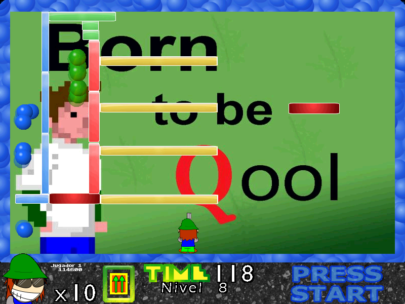

Descargas
Información
PiX Pang: 2.0
Esta versión es la más completa de todas, donde se nos presenta 4 modos de juego, entre ellos, el modo aventura, panic, safari y custom, además de un editor de niveles.
A veces llega a ser inestable, pero dentro de todo, es jugable.
Fue compilada en Fénix 0.84b. No funciona en Windows Vista ni en adelante.
Menú

Ingame
Curiosidades:
- Se puede jugar con un bot o con un amigo. (usando el mouse)
- A veces la partida puede guardarse incorrectamente, causando que cuando se intenté cargar el juego crashee.
- En el código fuente, tiene algunas variables secretas, como por ejemplo, "torneo". (me falta documentarlas)